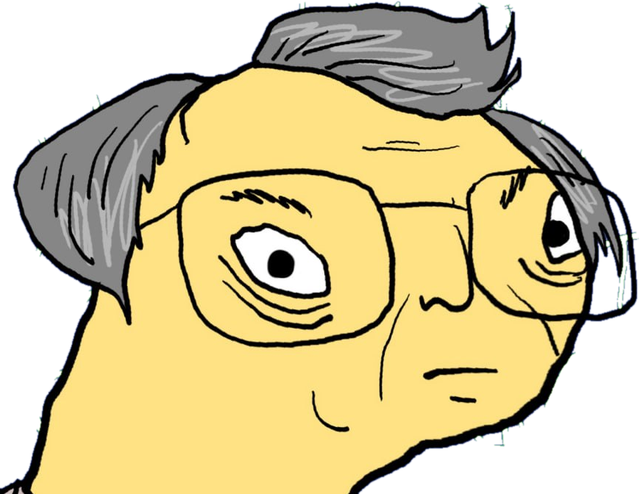
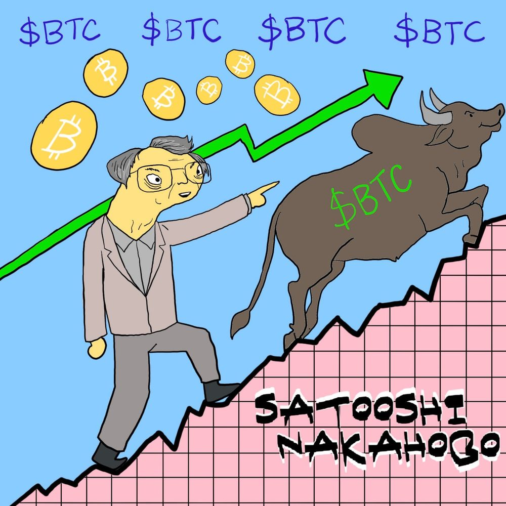
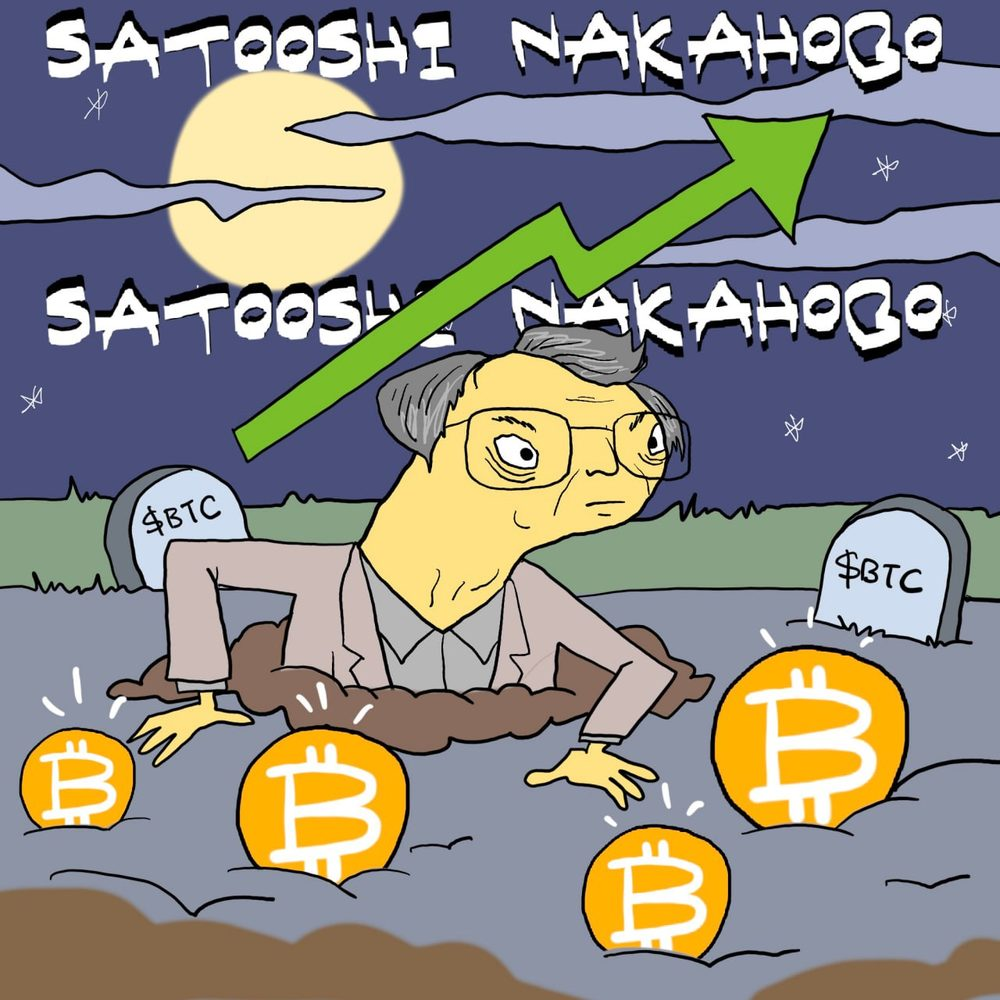
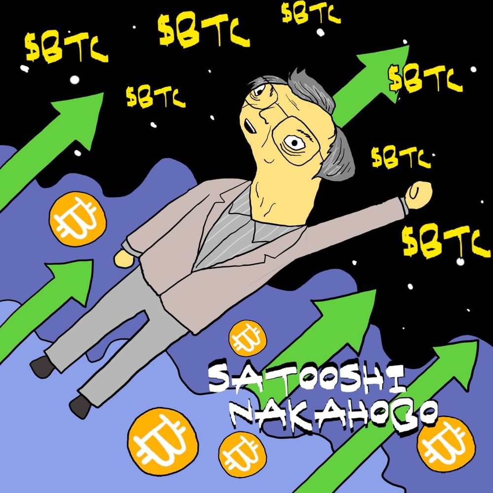
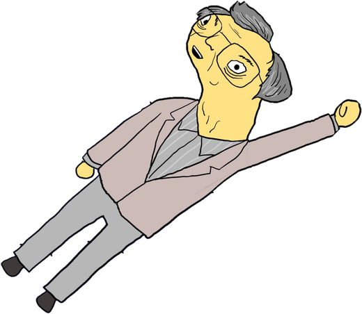
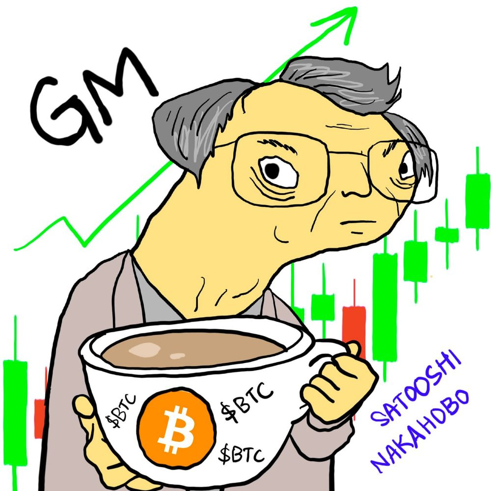
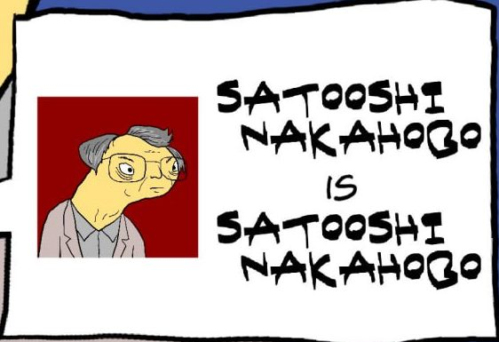
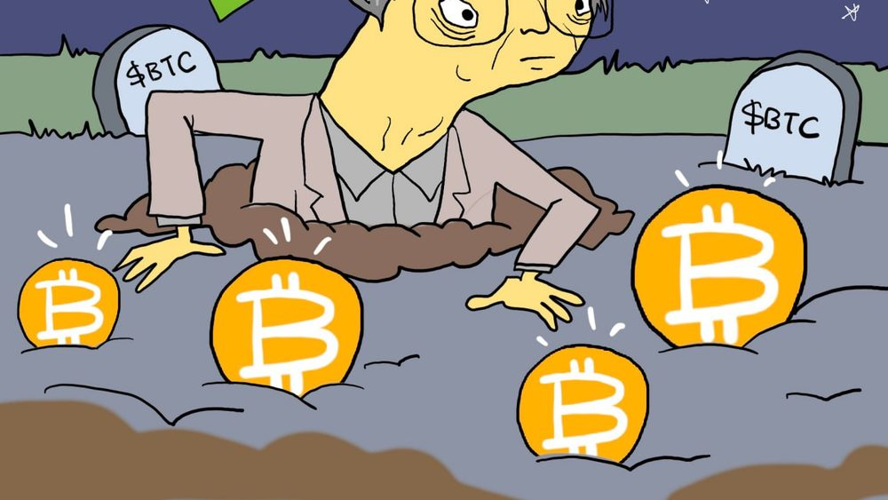

Satooshi: A Peer-to-Peer
Meme Cash System
www.[a website that will be up as long as the meme is]
Abstract
A purely peer-to-peer version of meme cash would allow online jokes to be passed directly from one holder to another without going through a committee. Digital signatures provide part of the solution, but the main benefits are lost if a trusted third party is still required to explain the joke. We propose a solution to the double-meme problem using a peer-to-peer network. The network timestamps memes by hashing them into an ongoing chain of group chats, forming a record that cannot be changed without redoing the whole bit. The longest chain not only serves as proof of the sequence of events witnessed, but proof that it came from the largest pool of degens. The author, as before, could not be reached for comment.1.Introduction
Commerce on the Internet has come to rely almost exclusively on memes serving as trusted third parties to process attention. In 2008 an anonymous author published nine pages to a cryptography mailing list, mined the first block, answered some emails, and then moved on to other things. Nobody knows who Satoshi is. This paper does not settle that question, and neither will you.
It does, however, note that a grey-haired figure in a grey suit and very large glasses has been seen near the charts again (Fig. 1), and that he appears to be climbing. We refer to this figure as Satooshi Nakahmoto: two o's and an h, partly for legal reasons and partly because the first spelling was taken. He is a cartoon. He is a cypherpunk legend. He has never once explained himself, and we respect that.
What is needed is a meme system based on cryptographic proof instead of trust, allowing any two willing parties to post directly with each other without the need for a trusted third party. In this paper we propose such a system. It is called $SATOOSHI, and it lives on Solana.

2.Transactions
We define an electronic meme as a chain of reposts. Each owner transfers the meme to the next by screenshotting the previous one and adding a caption. A payee can verify the reposts to verify the chain of ownership. The figures below were recovered from the network and are reproduced without peer review.







3.Timestamp Server
The solution we propose begins with a timestamp server. A timestamp server works by taking a hash of a block of lore and widely publishing the hash. Each timestamp includes the previous timestamp in its hash, forming a chain, with each additional timestamp reinforcing the ones before it.
- Nine pages are posted to a mailing list. Subject line: modest. Consequences: not.
- Block 0 is mined. Its coinbase quotes a newspaper headline, presumably as a hint. Nobody has decoded the hint, unless the hint was the headline.
- Someone pays 10,000 BTC for two pizzas. History remembers the pizzas.
- The author writes that he has "moved on to other things." The mailing list goes quiet. Speculation does not.
- Bull, bear, bull, bear. Throughout, 1 BTC = 1 BTC.
- A sequel appears. Unsigned. On Solana. With figures.
4.Proof-of-Meme
To implement a distributed timestamp server on a peer-to-peer basis, we will need a proof-of-meme system. The proof-of-meme involves scanning for a value that, when hashed with a contract address, begins with a number of zeros, followed by your bag. In practice the procedure is shorter than this paragraph.
- install Phantom wallet ▷ write the seed phrase on paper. Not on a napkin.
- acquire SOL on an exchange; send it to Phantom
- open pump.fun or Jupiter ▷ after migration, Jupiter routes it
- paste CA ← contract address below
- swap SOL → $SATOOSHI
- return to §2 and stare at the figures
where p is the probability an honest holder posts the next meme, q the probability a jeet sells it, and z the number of memes the jeet is behind. Equation (1) is not financial advice.
5.Network
The steps to run the network are as follows:
- New memes are broadcast to all nodes on X1.
- Each node collects new memes into a pinned thread on X2.
- Each node works on finding a better caption for its chat.
- When a node finds one, it broadcasts it to all nodes.
- Nodes check the chart on DexScreener3 and pump.fun4.
- Nodes express their acceptance of the meme by reposting it.
6.Incentive
By convention, the first transaction in a block is special. In $SATOOSHI there is no first transaction: no presale, no team allocation in the abstract, no special block. The incentive is the meme.
| Parameter | Prior work (2009) | This paper |
|---|---|---|
| Supply | 21,000,000 | 1,000,000,000 |
| Tax | n/a | 0% |
| Launch | CPU mining | Fair launch |
| Liquidity | n/a | LP burned |
| Author | Anonymous | Still anonymous |
7.Conclusion
We have proposed a system for meme transactions without relying on trust. We started with the usual framework of coins made from vibes, which provides strong control of ownership but is incomplete without a way to prevent double-memeing. To solve this, we proposed a peer-to-peer network that records a public history of reposts which quickly becomes computationally impractical for an attacker to change, provided the group chat stays awake.
1 $SATOOSHI = 1 $SATOOSHI. Everything else is commentary.
References
- [1]S. Nakahmoto, "Satooshi: A Peer-to-Peer Meme Cash System," v1. Recovery phrase written on a napkin; napkin lost, 2013.
- [2]Anonymous, "Who is Satooshi? A complete list of people who are definitely not him," ongoing, 2008–present.
- [3]A hungry developer, "Two pizzas for 10,000 BTC," forum post, 22 May 2010. Cited annually.
- [4]A British newspaper, front page, 3 Jan 2009. Cited in Block 0; see Appendix A.
- [5]Everyone, "1 BTC = 1 BTC," Proc. of the HODL Symposium, every bear market.
- [6]S. Nakahmoto, "I've moved on to other things," private correspondence, 2011. Status: moved back.
- [7]Reviewer 2, "Reject. The author could not be located for comment," 2026.
- [8]Your uncle, "Is it too late to get in?", Thanksgiving dinner, 2013, 2017, 2021, 2024.
- [9]R. Tree, "Hashes all the way down," J. Unbalanced Merkle Trees, vol. 0, 1979.
- X: x.com/[handle]. Memes are broadcast here.
- The pinned post on X. Always check the CA pinned at the top.
- DexScreener: dexscreener.com/solana/[pair]. The chart.
- pump.fun: pump.fun/[CA]. Where it began.
Appendix A. Block 0 (raw)
Hex dump of the sequel's first block. Read the right-hand column.
the sequel was in the hex all along.